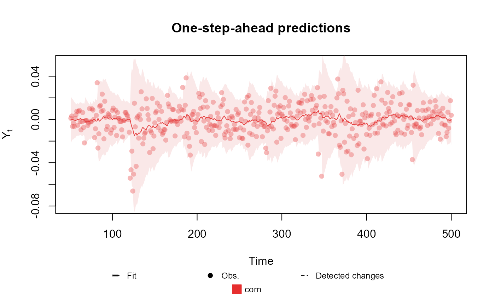

Fit a model given its structure and the observed data. This function can be used for any supported family (see vignette).
Usage
fit_model(
...,
smooth = TRUE,
p.monit = NA,
condition = "TRUE",
metric = "log.like",
lag = 1,
pred.cred = 0.95,
metric.cutoff = NA,
save.models = FALSE,
silent = FALSE
)Arguments
- ...
dlm_block or dlm_distr objects or named values: The structural blocks of the model (dlm_block objects), alongside the model outcomes (dlm_distr object). If at least one block is undefined, the user must also provide its value in this argument (see last example).
- smooth
boolean: A flag indicating if the smoothed distribution for the latent states should be calculated.
- p.monit
numeric (optional): The prior probability of changes in the latent space variables that are not part of its dynamic. Only used when performing sensitivity analysis.
- condition
character: A character defining which combinations of undefined hyper parameter should be tested. See example for details. Only used when performing sensitivity analysis.
- metric
character: The name of the metric to use for model selection. One of log-likelihood for the one-step-ahead prediction ("log.like"), Mean Absolute Scaled Error ("mase") (Hyndman and Koehler 2006) or Interval Score ("interval.score") (Bracher et al. 2021) . Only used when performing sensitivity analysis.
- lag
integer: The number of steps ahead used for the prediction when calculating the metrics. If lag<0, predictions are made using the smoothed distribution of the latent states. Only used when performing sensitivity analysis.
- pred.cred
numeric: A number between 0 and 1 (not included) indicating the credibility interval for predictions. If not within the valid range of values, 0.95 will be used. Only used when performing sensitivity analysis.
- metric.cutoff
integer: The number of observations to ignore when calculating the metrics. Default is 1/10 of the number of observations (rounded down). Only used when performing sensitivity analysis.
- save.models
boolean: A flag indicating if all evaluated models should be saved. If FALSE, only the best model (according to the chosen metric) will be saved. Only used when performing sensitivity analysis.
- silent
boolean: A flag indicating if a progress bar should be printed. Only used when performing sensitivity analysis.
Details
This is the main function of the kDGLM package, as it is used to fit all models.
For the details about the implementation see dos Santos et al. (2024) .
For the details about the methodology see Alves et al. (2024) .
For the details about the Dynamic Linear Models see West and Harrison (1997) and Petris et al. (2009) .
See also
auxiliary functions for creating outcomes Poisson, Multinom, Normal, Gamma, Dirichlet
auxiliary functions for creating structural blocks polynomial_block, regression_block, harmonic_block, TF_block
auxiliary functions for defining priors zero_sum_prior, CAR_prior
Other auxiliary functions for fitted_dlm objects:
coef.fitted_dlm(),
eval_dlm_norm_const(),
forecast.fitted_dlm(),
simulate.fitted_dlm(),
smoothing(),
update.fitted_dlm()
Examples
# Poisson case
data <- c(AirPassengers)
level <- polynomial_block(rate = 1, order = 2, D = 0.95)
season <- harmonic_block(rate = 1, order = 2, period = 12, D = 0.975)
outcome <- Poisson(lambda = "rate", data = data)
fitted.data <- fit_model(level, season,
AirPassengers = outcome
)
summary(fitted.data)
#> Fitted DGLM with 1 outcomes.
#>
#> distributions:
#> AirPassengers: Poisson
#>
#> ---
#> No static coeficients.
#> ---
#> See the coef.fitted_dlm for the coeficients with temporal dynamic.
#>
#> One-step-ahead prediction
#> Log-likelihood : -580.2514
#> Interval Score : 129.48462
#> Mean Abs. Scaled Error: 0.47013
#> ---
plot(fitted.data, plot.pkg = "base")
##################################################################
# Multinomial case
structure <- (
polynomial_block(p = 1, order = 2, D = 0.95) +
harmonic_block(p = 1, period = 12, D = 0.975) +
noise_block(p = 1, R1 = 0.1) +
regression_block(p = chickenPox$date >= as.Date("2013-09-01"))
# Vaccine was introduced in September of 2013
) * 4
outcome <- Multinom(p = structure$pred.names, data = chickenPox[, c(2, 3, 4, 6, 5)])
fitted.data <- fit_model(structure, chickenPox = outcome)
summary(fitted.data)
#> Fitted DGLM with 1 outcomes.
#>
#> distributions:
#> chickenPox: Multinomial
#>
#> Static coeficients (smoothed):
#> Estimate Std. Error t value Pr(>|t|)
#> Var.Reg.1 0.38672 0.25101 1.54061 0.123
#> Var.Reg.2 0.46804 0.26503 1.76600 0.077
#> Var.Reg.3 0.48480 0.28504 1.70080 0.089
#> Var.Reg.4 -0.26821 0.24810 -1.08105 0.280
#> ---
#> Signif. codes: 0 ‘***’ 0.001 ‘**’ 0.01 ‘*’ 0.05 ‘.’ 0.1 ‘ ’ 1
#>
#> ---
#> See the coef.fitted_dlm for the coeficients with temporal dynamic.
#>
#> One-step-ahead prediction
#> Log-likelihood : -1962.023
#> Interval Score : 167.73519
#> Mean Abs. Scaled Error: 0.77385
#> ---
plot(fitted.data, plot.pkg = "base")
##################################################################
# Univariate Normal case
structure <- polynomial_block(mu = 1, D = 0.95) +
polynomial_block(V = 1, D = 0.95)
outcome <- Normal(mu = "mu", V = "V", data = cornWheat$corn.log.return[1:500])
fitted.data <- fit_model(structure, corn = outcome)
summary(fitted.data)
#> Fitted DGLM with 1 outcomes.
#>
#> distributions:
#> corn: Normal
#>
#> ---
#> No static coeficients.
#> ---
#> See the coef.fitted_dlm for the coeficients with temporal dynamic.
#>
#> One-step-ahead prediction
#> Log-likelihood : 1277.54
#> Interval Score : 0.07564
#> Mean Abs. Scaled Error: 0.76327
#> ---
plot(fitted.data, plot.pkg = "base")

##################################################################
# Bivariate Normal case
structure <- (polynomial_block(mu = 1, D = 0.95) +
polynomial_block(V = 1, D = 0.95)) * 2 +
polynomial_block(rho = 1, D = 0.95)
outcome <- Normal(
mu = c("mu.1", "mu.2"),
V = matrix(c("V.1", "rho", "rho", "V.2"), 2, 2),
data = cornWheat[1:500, c(4, 5)]
)
fitted.data <- fit_model(structure, cornWheat = outcome)
summary(fitted.data)
#> Fitted DGLM with 1 outcomes.
#>
#> distributions:
#> cornWheat: Normal
#>
#> ---
#> No static coeficients.
#> ---
#> See the coef.fitted_dlm for the coeficients with temporal dynamic.
#>
#> One-step-ahead prediction
#> Log-likelihood : 2557.802
#> Interval Score : 0.07505
#> Mean Abs. Scaled Error: 0.74750
#> ---
plot(fitted.data, plot.pkg = "base")
 ##################################################################
# Gamma case
structure <- polynomial_block(mu = 1, D = 0.95)
outcome <- Gamma(phi = 0.5, mu = "mu", data = cornWheat$corn.log.return[1:500]**2)
fitted.data <- fit_model(structure, corn = outcome)
summary(fitted.data)
#> Fitted DGLM with 1 outcomes.
#>
#> distributions:
#> corn: Gamma
#>
#> ---
#> No static coeficients.
#> ---
#> See the coef.fitted_dlm for the coeficients with temporal dynamic.
#>
#> One-step-ahead prediction
#> Log-likelihood : -Inf
#> Interval Score : 0.00199
#> Mean Abs. Scaled Error: 0.93924
#> ---
plot(fitted.data, plot.pkg = "base")
##################################################################
# Gamma case
structure <- polynomial_block(mu = 1, D = 0.95)
outcome <- Gamma(phi = 0.5, mu = "mu", data = cornWheat$corn.log.return[1:500]**2)
fitted.data <- fit_model(structure, corn = outcome)
summary(fitted.data)
#> Fitted DGLM with 1 outcomes.
#>
#> distributions:
#> corn: Gamma
#>
#> ---
#> No static coeficients.
#> ---
#> See the coef.fitted_dlm for the coeficients with temporal dynamic.
#>
#> One-step-ahead prediction
#> Log-likelihood : -Inf
#> Interval Score : 0.00199
#> Mean Abs. Scaled Error: 0.93924
#> ---
plot(fitted.data, plot.pkg = "base")
 ##################################################################
# \donttest{
# Sensitivity analysis
data <- c(AirPassengers)
level <- polynomial_block(rate = 1, order = 2, D = "D.level")
season <- harmonic_block(rate = "sazo.effect", order = 2, period = 12, D = "D.sazo")
outcome <- Poisson(lambda = "rate", data = data)
fit_model(level, season, outcome,
sazo.effect = c(0, 1),
D.level = c(seq.int(0.8, 1, l = 11)),
D.sazo = c(seq.int(0.95, 1, l = 11)),
condition = "sazo.effect==1 | D.sazo==1"
)
#>
[==================================================] - 99.24% - ETA - NA
#> Error in rep(" ", 50 - n.bar): invalid 'times' argument
# }
##################################################################
# \donttest{
# Sensitivity analysis
data <- c(AirPassengers)
level <- polynomial_block(rate = 1, order = 2, D = "D.level")
season <- harmonic_block(rate = "sazo.effect", order = 2, period = 12, D = "D.sazo")
outcome <- Poisson(lambda = "rate", data = data)
fit_model(level, season, outcome,
sazo.effect = c(0, 1),
D.level = c(seq.int(0.8, 1, l = 11)),
D.sazo = c(seq.int(0.95, 1, l = 11)),
condition = "sazo.effect==1 | D.sazo==1"
)
#>
[==================================================] - 99.24% - ETA - NA
#> Error in rep(" ", 50 - n.bar): invalid 'times' argument
# }